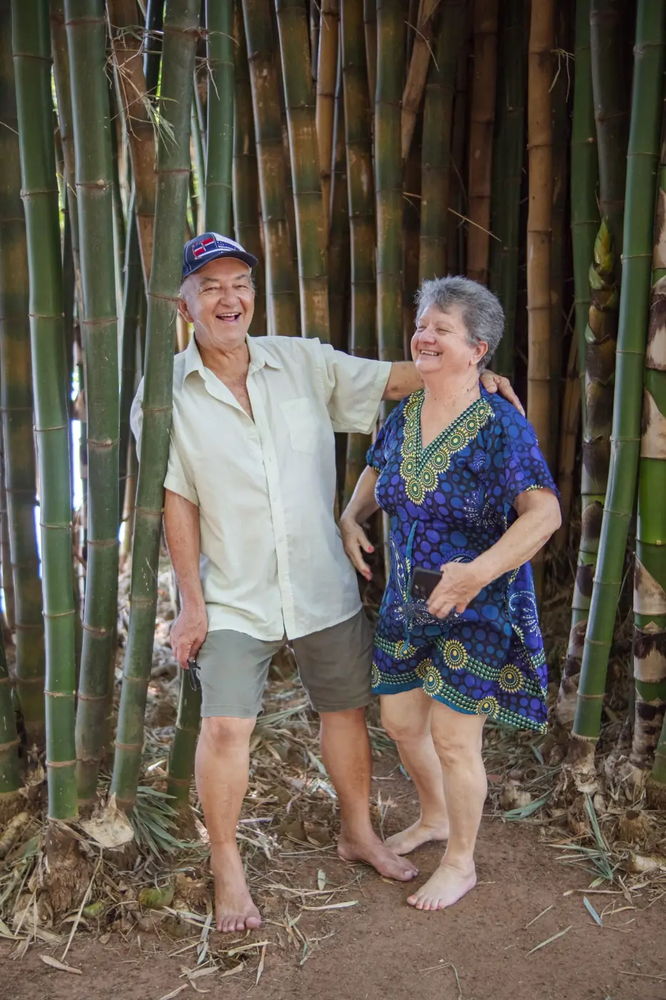

Dúvidas frequentes
Perguntas e respostas, em palavras simples
Escreva uma palavra (por exemplo, "perícia" ou "roça") ou escolha um tema. Se a sua dúvida não estiver aqui, pergunte direto ao escritório.

Atendimento
Preciso ir ao escritório ou dá para resolver por telefone?
Como preferir. Atendemos no escritório, por telefone, por chamada de vídeo e, para quem não consegue se deslocar, é possível combinar uma visita.
Um filho ou neto pode vir comigo ou falar por mim?
Pode e é bem-vindo. Muitas conversas são feitas junto com a família. Para que um familiar resolva coisas no seu nome, pode ser preciso uma procuração, e explicamos como fazer.
O escritório fala quanto eu vou receber?
Não pelo site nem antes de ver os documentos. O valor de um benefício depende do histórico de cada pessoa. Depois da análise, explicamos o que for possível saber.
O escritório garante que vou conseguir o benefício?
Não. Nenhum advogado pode prometer resultado. O nosso compromisso é analisar com cuidado, explicar com clareza e orientar sobre o melhor caminho.
Aposentadoria
Com que idade posso me aposentar?
Depende do tipo de aposentadoria e de quando você começou a contribuir. Na aposentadoria por idade urbana, em regra, 65 anos para homens e 62 para mulheres; na rural, 60 e 55. Veja a página Aposentadorias.
Trabalhei na roça quando era jovem. Isso conta?
Pode contar, com documentos da época e, às vezes, testemunhas. Como esse tempo entra na conta depende do tipo de aposentadoria.
Paguei carnê por um tempo e parei. Perdi?
Não. As contribuições pagas continuam no seu cadastro e contam para a aposentadoria.
BPC/LOAS
O BPC é a mesma coisa que aposentadoria?
Não. O BPC é um benefício assistencial para idosos a partir de 65 anos ou pessoas com deficiência de baixa renda. Não exige contribuição, não paga 13º e não deixa pensão.
Preciso estar no Cadastro Único para pedir o BPC?
Sim. O CadÚnico precisa estar feito e atualizado no CRAS, com o CPF de todos da casa.
Incapacidade
Estou doente e não consigo trabalhar. O que faço primeiro?
Reúna os laudos, exames e receitas, e confira se as suas contribuições estão em dia no CNIS. Depois, o pedido é feito no Meu INSS e passa por perícia médica.
A perícia negou o meu auxílio. Ainda dá para fazer algo?
Pode haver caminhos, como o recurso no INSS (a lei dá 30 dias) ou um novo pedido. Traga a carta com a decisão para a conversa.
Pensão por morte
Meu marido faleceu. Quanto tempo tenho para pedir a pensão?
Se o pedido for feito em até 90 dias do falecimento, o pagamento conta desde a data do óbito. Depois disso ainda é possível pedir, mas o pagamento conta a partir do pedido.
Não éramos casados no papel. Tenho direito à pensão?
A união estável pode ser comprovada com documentos e, às vezes, testemunhas. Veja a página Pensão por morte.
Documentos
O que é o extrato do CNIS e como consigo?
É o extrato com todos os empregos e contribuições que o INSS tem registrados. Você tira pelo aplicativo Meu INSS, em "Extrato de contribuição (CNIS)". Se não conseguir, ajudamos na conversa.
Perdi minha carteira de trabalho antiga. E agora?
Tudo bem. Existem outros caminhos para provar um emprego, como registros da empresa, termo de rescisão, holerites ou o próprio CNIS. Conte para nós o que você tem.
Recebi uma carta do INSS e não entendi. O que faço?
Guarde a carta e traga para a conversa, ou mande uma foto pelo WhatsApp. Muitas cartas têm prazos, por isso é bom não deixar para depois.
Não encontrou a sua dúvida?
Mande a pergunta pelo WhatsApp. Respondemos em palavras simples.
Cada caso depende de análise
As informações desta página são gerais e servem para você entender o assunto. Se você tem ou não direito, e qual o melhor caminho, só dá para saber depois de olhar os seus documentos. O escritório não promete resultado nem prazo.